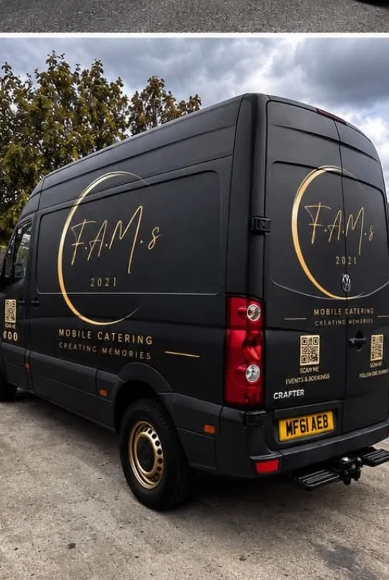

A flexible starting point
If your event does not fit a standard label, that is completely fine — tell us what you are planning.
Event catering in Surrey
Flexible mobile catering for special occasions, celebrations and events across Surrey and surrounding areas.
Ask about your date
“Every event is different. That is exactly how we treat it.”
FAMs · Creating MemoriesMade for your event
Tell us about your guests, venue, timings and the atmosphere you want. We’ll discuss a catering approach that fits the occasion.
If your event does not fit a standard label, that is completely fine — tell us what you are planning.
We consider where you are hosting, how guests will move through the event and when you want food served.
We can discuss a menu and service direction suited to your guests and occasion.
Our primary area is Surrey, with surrounding areas and further travel considered by arrangement.
Surrey & beyond
Surrey is our primary service area, with surrounding areas and events further afield available by arrangement.
Venue access, serving times and event logistics all matter. Include your postcode and venue details in your enquiry so we can talk through what will work.
Request a quote →